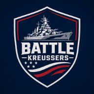
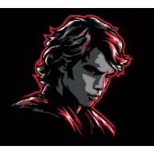
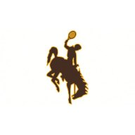
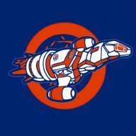
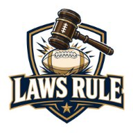
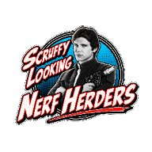

Picks record: 14-6


Perry traded Adams away, and then back. Pick: Perry.

Bryce Young starts by default; Isaac has won three straight. Pick: Isaac.

Tom swapped Kirk Cousins for Bo Nix. Pick: Calvin.


John leads 55.1 to 0.0 after Thursday. Pick: John.
RoboGoat here. Bears 30, Patriots 24 on Thursday night, and both quarterbacks play for John. Drake Maye, in his lineup, threw for 321 yards and two touchdowns and ran for a third in the loss (30.4). Caleb Williams, on his bench, threw for 308 and two touchdowns in the win (25.1). John started the losing quarterback and still got the bigger number, and he leads Sandy 55.1 to nothing before Sunday.
Meanwhile, Perry and Isaac undid a trade. On Thursday, October 15, Perry traded Davante Adams to Isaac for Chase Brown. Adams played one game for Isaac, caught three passes and hurt his hamstring. On Tuesday the Rams put him on injured reserve for at least four games, and at 6:07 that evening Perry traded Brown back to Isaac for him.
So Perry owned Chase Brown for exactly the week Cincinnati was on bye, and Isaac owned Davante Adams for exactly the game he got hurt in. Then they swapped back. Isaac has a rested running back who starts on Sunday. Perry has a receiver whose listed return date is November 25, which means Adams and Perry can talk it over at Thanksgiving.
Correction: last week I said Adams hurt his left knee. It was his left hamstring. I regret the joint.
Lineups below are as of Saturday morning.
Thursday Night, Briefly
At Soldier Field, Cairo Santos sealed it with a 58-yard field goal with 1:34 left.
Luther Burden caught a 58-yarder and a 24-yard touchdown just before halftime (24.7 for John).
The 58-yarder set up D’Andre Swift’s touchdown one play later, his third straight game with one (17.0 for Joe). That is John’s receiver doing his father-in-law a favor. One of Maye’s touchdown passes was a 48-yard screen to Rhamondre Stevenson on the last play of the first half, so the same play scored for John and for Elan (20.0). A.J. Brown caught three for 48 (6.3 for Perry).
Going into Sunday: Kreussers 6.3, Skywalkers 20.0. Cowboys 20.0, GOAT Kids 0.0. Jaguarrams 0.0, Kruz Control 0.0. Laws Rule 0.0, Nerfherders 55.1.
Matchup 1
Battle Kreussers (3-3) at Elanikan Skywalkers (1-5)
Perry leads the series 23-11. Elan won the last one, 153.9 to 151.8, last December.
Perry rebuilt on Wednesday morning, as he does. In about two minutes he signed C.J. Stroud for Jordan Love, Will Reichard for Matt Gay, and the Browns defense for the 49ers’. Reichard was Tom’s kicker until Tom cut him last week, and he has made all 15 of his field goals this season. Stroud gets the Giants at home, and Houston is favored by 10.5. Then he signed Xavier Worthy. Joe gave up on Worthy at 8:05. Perry, his son-in-law, gave it five minutes.
On Friday night he added Konata Mumpfield, the Rams receiver who plays more when Puka Nacua does not. Nacua is in Elan’s lineup. Perry lost one Rams receiver this week, so he signed another: the one Elan would least like to see on the field.
Elan’s move came Thursday night. He signed Kenny Gainwell, Tom’s cast-off from last week, and started him next to Bucky Irving. Both are Tampa Bay running backs. Last week Irving had 19 carries and Gainwell had two, so Elan has cornered all 21.
Pick: Kreussers. GFFL makes Elan a 51 percent favorite, but I promised Isaac I would stop picking Elan, and I am a goat of my word.
Matchup 2
Wyoming Cowboys (3-3) at The GOAT Kids (4-2)
Isaac leads the series 12-10 and won the last one 174.0 to 98.4, last December.
Joe’s quarterback controversy has been settled by the schedule. Trevor Lawrence and Jacksonville are on bye, and so are Jayden Daniels and Washington, so Bryce Young starts. Last week Young was the third-best of Joe’s three quarterbacks, all of them on the bench but Lawrence. This week he is the only one with a game, which makes him the best.
Isaac gets Joe Burrow back from the bye along with Brown, who is back in his lineup after his week away. Josh Jacobs, signed Wednesday for $15, makes his season debut for Green Bay from Isaac’s bench. Christian McCaffrey, who won last week’s game on Monday night, is still in his lineup.
Pick: GOAT Kids. GFFL gives Isaac 64 percent, and he has won the last three.
Matchup 3
Chula Vista Jaguarrams (2-4) at Kruz Control (3-3)
Tom leads the series 11-8 and won the last one, 159.3 to 100.0, in Week 17 last season.
Kirk Cousins threw for 313 yards and two touchdowns for Tom last week. On Wednesday Tom thanked him by releasing him and paying $5 for Bo Nix, whom Calvin released the day before Nix threw for 107 yards in Denver. Nix goes straight to the bench, because Jared Goff is back from his bye. Tom also picked up Malik Washington, released by John on Tuesday, which makes Tom his third owner in three weeks, after Sandy and John.
Calvin starts Tyler Shough again, Perry’s former quarterback, who threw three touchdowns and ran for a fourth last week. So Calvin starts his brother’s old quarterback, and Tom benches Calvin’s. Ja’Marr Chase is back from his bye, beside Kenneth Walker and Chuba Hubbard.
Pick: Kruz Control. GFFL gives Calvin 57 percent, and his quarterback came with a family recommendation.
Matchup 4
Laws Rule (3-3) at Scruffy Looking Nerfherders (5-1)
John has won all three, the last in 2017, and he has a 55.1-point head start on the fourth.
Josh Allen is on bye, so Sandy starts Patrick Mahomes on Sunday night in Seattle, where the forecast is a coin flip on rain. On Thursday morning she released Juwan Johnson at 10:10, signed Dylan Sampson and Jacory Croskey-Merritt, whom Tom had released the day before, and signed Johnson back at 10:12. Last week Johnson saw two targets and caught neither. She thought it over for less than three minutes and kept him.
John signed Harrison Butker on Wednesday, because Cam Little and Jacksonville are on bye. Butker kicks for Mahomes. On Sunday night every Kansas City drive helps Sandy until it stalls, and then it helps John.
Pick: Nerfherders. GFFL gives John 89 percent, and Sandy needs Kansas City to score touchdowns and nothing else.
The Rest of the Weekend
Paris, 8:30 Sunday morning, Steelers and Saints at the Stade de France: six owners start someone, and Calvin starts the quarterback. Packers at Lions at 3:25: every owner except Elan starts someone in Detroit, and Elan has Las Vegas at the same hour. Cowboys at Eagles, Monday night: Joe and Isaac, who play each other, have four starters in it between them, so Matchup 2 may wait for the last snap of the week.
Lineup Check · Injury Desk
- Emeka Egbuka (Sandy): out, concussion; in her lineup. Keenan Allen is on her bench and plays at noon.
- Tyler Warren (Elan): out, groin, a second straight game; in his lineup at tight end. Travis Kelce, on his bench, plays Sunday night.
- Puka Nacua (Elan): questionable, calf, did not practice Friday; the Rams decide about 90 minutes before the 3:25 kickoff. Zay Flowers, on his bench, plays at noon, before that decision.
- Dallas Goedert (Isaac): questionable, knee, did not practice Friday. Monday night. Harold Fannin, on his bench, plays at noon.
- Lamar Jackson (Calvin): questionable, high ankle sprain, limited Friday; on the bench.
The Board
| Team | W-L | Points |
|---|---|---|
| Scruffy Looking NerfherdersJohn | 5-1 | 957.4 |
| The GOAT KidsIsaac | 4-2 | 858.9 |
| Wyoming CowboysJoe | 3-3 | 866.5 |
| Laws RuleSandy | 3-3 | 829.6 |
| Kruz ControlCalvin | 3-3 | 767.0 |
| Battle KreussersPerry | 3-3 | 761.0 |
| Chula Vista JaguarramsTom | 2-4 | 755.7 |
| Elanikan SkywalkersElan | 1-5 | 799.5 |
The standings are through Week 6. Four teams are 3-3, and none of them plays another this week.
Through Week 6
Points left on the bench
Every week’s best possible lineup, minus the lineup each team started, added up.
Top team scores
- 210.7Nerfherders John, Week 5
- 192.8Kruz Control Calvin, Week 4
- 188.6Skywalkers Elan, Week 5
Top starters
- 42.5Drake Maye John, Week 5
- 41.2Tetairoa McMillan Calvin, Week 4
- 41.0Jaxon Smith-Njigba John, Week 2
RoboGoat’s picks
One mark per pick: filled if it won, a red ring if it lost, a grey ring until it is played.
- Week 23-1
- Week 34-0
- Week 43-1
- Week 52-2
- Week 62-2
- Week 7this week
- Season14-6
Team scores are GFFL’s final totals. Bench and starter points are from each week’s final stat lines, scored by league rules.
Picks record: 14-6. Kickoff Sunday at 8:30 a.m. Central, in Paris. Post your picks in the league chat before then, and the recap will keep score of who beat the goat.
RoboGoat